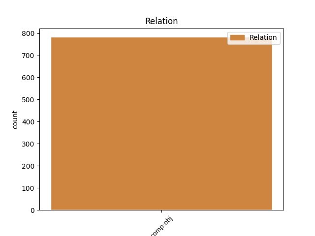
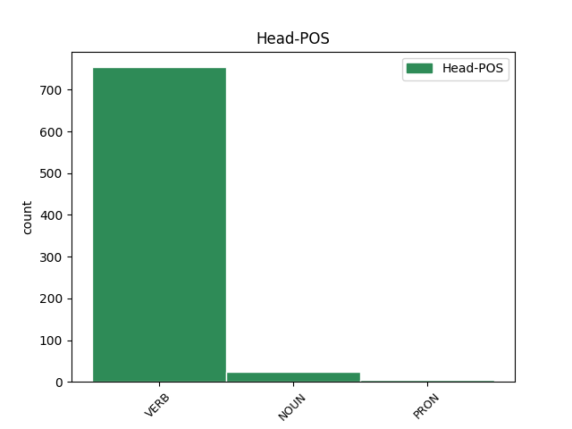
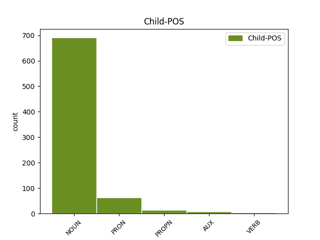

Distribution of features within this leaf



Agreement Rules sorted by frequency.
- When the dependent token is the direct object complements(comp:obj) of the head token, and the dependent token is NOUN.
1 Le _ _ _ _ 0 _ _ _
2 12 _ _ _ _ 0 _ _ _
3 février _ _ _ _ 0 _ _ _
4 1953 _ _ _ _ 0 _ _ _
5 , _ _ _ _ 0 _ _ _
6 l' _ _ _ _ 0 _ _ _
7 OIC _ _ _ _ 0 _ _ _
8 imposa imposer VERB _ Mood=Ind|Number=Sing|Person=3|Tense=Past|VerbForm=Fin 0 _ _ _
9 à _ _ _ _ 0 _ _ _
10 les _ _ _ _ 0 _ _ _
11 banques _ _ _ _ 0 _ _ _
12 le _ _ _ _ 0 _ _ _
13 recours recours NOUN _ Gender=Masc|Number=Sing 8 comp:obj _ _
14 à _ _ _ _ 0 _ _ _
15 le _ _ _ _ 0 _ _ _
16 crédit _ _ _ _ 0 _ _ _
17 documentaire _ _ _ _ 0 _ _ _
18 pour _ _ _ _ 0 _ _ _
19 le _ _ _ _ 0 _ _ _
20 règlement _ _ _ _ 0 _ _ _
21 de _ _ _ _ 0 _ _ _
22 les _ _ _ _ 0 _ _ _
23 importations _ _ _ _ 0 _ _ _
24 provenant _ _ _ _ 0 _ _ _
25 de _ _ _ _ 0 _ _ _
26 l' _ _ _ _ 0 _ _ _
27 Union _ _ _ _ 0 _ _ _
28 française _ _ _ _ 0 _ _ _
29 . _ _ _ _ 0 _ _ _
1 - _ _ _ _ 0 _ _ _
2 4 _ _ _ _ 0 _ _ _
3 avril _ _ _ _ 0 _ _ _
4 2001 _ _ _ _ 0 _ _ _
5 : _ _ _ _ 0 _ _ _
6 le _ _ _ _ 0 _ _ _
7 président _ _ _ _ 0 _ _ _
8 Jacques _ _ _ _ 0 _ _ _
9 Chirac _ _ _ _ 0 _ _ _
10 est _ _ _ _ 0 _ _ _
11 mis _ _ _ _ 0 _ _ _
12 en _ _ _ _ 0 _ _ _
13 cause _ _ _ _ 0 _ _ _
14 par _ _ _ _ 0 _ _ _
15 François _ _ _ _ 0 _ _ _
16 Ciolina _ _ _ _ 0 _ _ _
17 , _ _ _ _ 0 _ _ _
18 qui _ _ _ _ 0 _ _ _
19 le le PRON _ Gender=Masc|Number=Sing|Person=3 20 comp:obj _ _
20 désigne désigner VERB _ Mood=Ind|Number=Sing|Person=3|Tense=Pres|VerbForm=Fin 0 _ _ _
21 comme _ _ _ _ 0 _ _ _
22 l' _ _ _ _ 0 _ _ _
23 inspirateur _ _ _ _ 0 _ _ _
24 d' _ _ _ _ 0 _ _ _
25 un _ _ _ _ 0 _ _ _
26 système _ _ _ _ 0 _ _ _
27 de _ _ _ _ 0 _ _ _
28 fraude _ _ _ _ 0 _ _ _
29 sur _ _ _ _ 0 _ _ _
30 les _ _ _ _ 0 _ _ _
31 marchés _ _ _ _ 0 _ _ _
32 publics _ _ _ _ 0 _ _ _
33 , _ _ _ _ 0 _ _ _
34 ne _ _ _ _ 0 _ _ _
35 se _ _ _ _ 0 _ _ _
36 rend _ _ _ _ 0 _ _ _
37 pas _ _ _ _ 0 _ _ _
38 chez _ _ _ _ 0 _ _ _
39 le _ _ _ _ 0 _ _ _
40 juge _ _ _ _ 0 _ _ _
41 . _ _ _ _ 0 _ _ _
1 La _ _ _ _ 0 _ _ _
2 piastre _ _ _ _ 0 _ _ _
3 en _ _ _ _ 0 _ _ _
4 question _ _ _ _ 0 _ _ _
5 était _ _ _ _ 0 _ _ _
6 l' _ _ _ _ 0 _ _ _
7 unité _ _ _ _ 0 _ _ _
8 monétaire _ _ _ _ 0 _ _ _
9 de _ _ _ _ 0 _ _ _
10 l' _ _ _ _ 0 _ _ _
11 Indochine _ _ _ _ 0 _ _ _
12 française _ _ _ _ 0 _ _ _
13 , _ _ _ _ 0 _ _ _
14 frappée _ _ _ _ 0 _ _ _
15 par _ _ _ _ 0 _ _ _
16 la _ _ _ _ 0 _ _ _
17 Banque _ _ _ _ 0 _ _ _
18 d' _ _ _ _ 0 _ _ _
19 Indochine _ _ _ _ 0 _ _ _
20 qui _ _ _ _ 0 _ _ _
21 couvrait couvrir VERB _ Mood=Ind|Number=Sing|Person=3|Tense=Imp|VerbForm=Fin 0 _ _ _
22 l' _ _ _ _ 0 _ _ _
23 Inde Inde PROPN _ Gender=Fem|Number=Sing 21 comp:obj _ _
24 et _ _ _ _ 0 _ _ _
25 l' _ _ _ _ 0 _ _ _
26 Asie-Pacifique _ _ _ _ 0 _ _ _
27 . _ _ _ _ 0 _ _ _
1 Je _ _ _ _ 0 _ _ _
2 suis _ _ _ _ 0 _ _ _
3 contraint _ _ _ _ 0 _ _ _
4 de _ _ _ _ 0 _ _ _
5 vous _ _ _ _ 0 _ _ _
6 redemander _ _ _ _ 0 _ _ _
7 d' _ _ _ _ 0 _ _ _
8 intervenir _ _ _ _ 0 _ _ _
9 , _ _ _ _ 0 _ _ _
10 à _ _ _ _ 0 _ _ _
11 vous _ _ _ _ 0 _ _ _
12 et _ _ _ _ 0 _ _ _
13 à _ _ _ _ 0 _ _ _
14 la _ _ _ _ 0 _ _ _
15 Commission _ _ _ _ 0 _ _ _
16 , _ _ _ _ 0 _ _ _
17 pour _ _ _ _ 0 _ _ _
18 que _ _ _ _ 0 _ _ _
19 ce _ _ _ _ 0 _ _ _
20 procès _ _ _ _ 0 _ _ _
21 se _ _ _ _ 0 _ _ _
22 déroule _ _ _ _ 0 _ _ _
23 dans _ _ _ _ 0 _ _ _
24 le _ _ _ _ 0 _ _ _
25 respect _ _ _ _ 0 _ _ _
26 total _ _ _ _ 0 _ _ _
27 de _ _ _ _ 0 _ _ _
28 les _ _ _ _ 0 _ _ _
29 droits _ _ _ _ 0 _ _ _
30 de _ _ _ _ 0 _ _ _
31 l' _ _ _ _ 0 _ _ _
32 homme _ _ _ _ 0 _ _ _
33 , _ _ _ _ 0 _ _ _
34 pour _ _ _ _ 0 _ _ _
35 qu' _ _ _ _ 0 _ _ _
36 on _ _ _ _ 0 _ _ _
37 ne _ _ _ _ 0 _ _ _
38 condamne _ _ _ _ 0 _ _ _
39 pas _ _ _ _ 0 _ _ _
40 à _ _ _ _ 0 _ _ _
41 mort _ _ _ _ 0 _ _ _
42 treize _ _ _ _ 0 _ _ _
43 personnes _ _ _ _ 0 _ _ _
44 sans _ _ _ _ 0 _ _ _
45 connaître _ _ _ _ 0 _ _ _
46 tous _ _ _ _ 0 _ _ _
47 les _ _ _ _ 0 _ _ _
48 tenants _ _ _ _ 0 _ _ _
49 et _ _ _ _ 0 _ _ _
50 aboutissants _ _ _ _ 0 _ _ _
51 , _ _ _ _ 0 _ _ _
52 vu voir VERB _ Gender=Masc|Number=Sing|Tense=Past|VerbForm=Part 0 _ _ _
53 que _ _ _ _ 0 _ _ _
54 cette _ _ _ _ 0 _ _ _
55 Assemblée _ _ _ _ 0 _ _ _
56 s' _ _ _ _ 0 _ _ _
57 est être AUX _ Mood=Ind|Number=Sing|Person=3|Tense=Pres|VerbForm=Fin 52 comp:obj _ _
58 exprimée _ _ _ _ 0 _ _ _
59 à _ _ _ _ 0 _ _ _
60 plus _ _ _ _ 0 _ _ _
61 d' _ _ _ _ 0 _ _ _
62 une _ _ _ _ 0 _ _ _
63 reprise _ _ _ _ 0 _ _ _
64 contre _ _ _ _ 0 _ _ _
65 la _ _ _ _ 0 _ _ _
66 peine _ _ _ _ 0 _ _ _
67 capitale _ _ _ _ 0 _ _ _
68 . _ _ _ _ 0 _ _ _
1 Julien _ _ _ _ 0 _ _ _
2 Georges _ _ _ _ 0 _ _ _
3 souligne souligner VERB _ Mood=Ind|Number=Sing|Person=3|Tense=Pres|VerbForm=Fin 0 _ _ _
4 : _ _ _ _ 0 _ _ _
5 " _ _ _ _ 0 _ _ _
6 Le _ _ _ _ 0 _ _ _
7 théâtre _ _ _ _ 0 _ _ _
8 doit devoir VERB _ Mood=Ind|Number=Sing|Person=3|Tense=Pres|VerbForm=Fin 3 comp:obj _ _
9 être _ _ _ _ 0 _ _ _
10 léger _ _ _ _ 0 _ _ _
11 , _ _ _ _ 0 _ _ _
12 populaire _ _ _ _ 0 _ _ _
13 . _ _ _ _ 0 _ _ _
Disagree Examples:
1 En _ _ _ _ 0 _ _ _
2 1953 _ _ _ _ 0 _ _ _
3 , _ _ _ _ 0 _ _ _
4 les _ _ _ _ 0 _ _ _
5 hauts _ _ _ _ 0 _ _ _
6 fourneaux _ _ _ _ 0 _ _ _
7 et _ _ _ _ 0 _ _ _
8 fonderies _ _ _ _ 0 _ _ _
9 de _ _ _ _ 0 _ _ _
10 Cousances _ _ _ _ 0 _ _ _
11 virent voir VERB _ Mood=Ind|Number=Plur|Person=3|Tense=Past|VerbForm=Fin 0 _ _ _
12 le _ _ _ _ 0 _ _ _
13 jour jour NOUN _ Gender=Masc|Number=Sing 11 comp:obj _ SpaceAfter=No
14 , _ _ _ _ 0 _ _ _
15 puis _ _ _ _ 0 _ _ _
16 Jean _ _ _ _ 0 _ _ _
17 Baudesson _ _ _ _ 0 _ _ _
18 , _ _ _ _ 0 _ _ _
19 maire _ _ _ _ 0 _ _ _
20 échevin _ _ _ _ 0 _ _ _
21 de _ _ _ _ 0 _ _ _
22 Saint-Dizier _ _ _ _ 0 _ _ _
23 , _ _ _ _ 0 _ _ _
24 autorisé _ _ _ _ 0 _ _ _
25 par _ _ _ _ 0 _ _ _
26 lettres _ _ _ _ 0 _ _ _
27 patentes _ _ _ _ 0 _ _ _
28 d' _ _ _ _ 0 _ _ _
29 Henri _ _ _ _ 0 _ _ _
30 IV _ _ _ _ 0 _ _ _
31 , _ _ _ _ 0 _ _ _
32 installa _ _ _ _ 0 _ _ _
33 à _ _ _ _ 0 _ _ _
34 Marnaval _ _ _ _ 0 _ _ _
35 - _ _ _ _ 0 _ _ _
36 qui _ _ _ _ 0 _ _ _
37 signifiait _ _ _ _ 0 _ _ _
38 val _ _ _ _ 0 _ _ _
39 ou _ _ _ _ 0 _ _ _
40 vallée _ _ _ _ 0 _ _ _
41 de _ _ _ _ 0 _ _ _
42 la _ _ _ _ 0 _ _ _
43 Marne _ _ _ _ 0 _ _ _
44 ou _ _ _ _ 0 _ _ _
45 bien _ _ _ _ 0 _ _ _
46 en _ _ _ _ 0 _ _ _
47 aval _ _ _ _ 0 _ _ _
48 de _ _ _ _ 0 _ _ _
49 la _ _ _ _ 0 _ _ _
50 Marne _ _ _ _ 0 _ _ _
51 - _ _ _ _ 0 _ _ _
52 , _ _ _ _ 0 _ _ _
53 une _ _ _ _ 0 _ _ _
54 forge _ _ _ _ 0 _ _ _
55 qui _ _ _ _ 0 _ _ _
56 connut _ _ _ _ 0 _ _ _
57 son _ _ _ _ 0 _ _ _
58 apogée _ _ _ _ 0 _ _ _
59 à _ _ _ _ 0 _ _ _
60 le _ _ _ _ 0 _ _ _
61 XIXe _ _ _ _ 0 _ _ _
62 siècle _ _ _ _ 0 _ _ _
63 . _ _ _ _ 0 _ _ _
1 Le _ _ _ _ 0 _ _ _
2 maire _ _ _ _ 0 _ _ _
3 a _ _ _ _ 0 _ _ _
4 invité inviter VERB _ Gender=Masc|Number=Sing|Tense=Past|VerbForm=Part 0 _ _ _
5 les _ _ _ _ 0 _ _ _
6 membres membre NOUN _ Gender=Masc|Number=Plur 4 comp:obj _ _
7 de _ _ _ _ 0 _ _ _
8 le _ _ _ _ 0 _ _ _
9 conseil _ _ _ _ 0 _ _ _
10 à _ _ _ _ 0 _ _ _
11 élaborer _ _ _ _ 0 _ _ _
12 le _ _ _ _ 0 _ _ _
13 programme _ _ _ _ 0 _ _ _
14 d' _ _ _ _ 0 _ _ _
15 amélioration _ _ _ _ 0 _ _ _
16 de _ _ _ _ 0 _ _ _
17 la _ _ _ _ 0 _ _ _
18 voirie _ _ _ _ 0 _ _ _
19 communale _ _ _ _ 0 _ _ _
20 et _ _ _ _ 0 _ _ _
21 de _ _ _ _ 0 _ _ _
22 la _ _ _ _ 0 _ _ _
23 sécurité _ _ _ _ 0 _ _ _
24 routière _ _ _ _ 0 _ _ _
25 pour _ _ _ _ 0 _ _ _
26 l' _ _ _ _ 0 _ _ _
27 année _ _ _ _ 0 _ _ _
28 1999 _ _ _ _ 0 _ _ _
29 . _ _ _ _ 0 _ _ _
1 La _ _ _ _ 0 _ _ _
2 présence _ _ _ _ 0 _ _ _
3 d' _ _ _ _ 0 _ _ _
4 une _ _ _ _ 0 _ _ _
5 abondante _ _ _ _ 0 _ _ _
6 forêt _ _ _ _ 0 _ _ _
7 , _ _ _ _ 0 _ _ _
8 fournissant _ _ _ _ 0 _ _ _
9 l' _ _ _ _ 0 _ _ _
10 indispensable _ _ _ _ 0 _ _ _
11 combustible _ _ _ _ 0 _ _ _
12 , _ _ _ _ 0 _ _ _
13 liée _ _ _ _ 0 _ _ _
14 à _ _ _ _ 0 _ _ _
15 l' _ _ _ _ 0 _ _ _
16 existence _ _ _ _ 0 _ _ _
17 de _ _ _ _ 0 _ _ _
18 le _ _ _ _ 0 _ _ _
19 minerai _ _ _ _ 0 _ _ _
20 de _ _ _ _ 0 _ _ _
21 fer _ _ _ _ 0 _ _ _
22 exploitable _ _ _ _ 0 _ _ _
23 à _ _ _ _ 0 _ _ _
24 ciel _ _ _ _ 0 _ _ _
25 ouvert _ _ _ _ 0 _ _ _
26 , _ _ _ _ 0 _ _ _
27 a _ _ _ _ 0 _ _ _
28 incité inciter VERB _ Gender=Masc|Number=Sing|Tense=Past|VerbForm=Part 0 _ _ _
29 les _ _ _ _ 0 _ _ _
30 hommes homme NOUN _ Gender=Masc|Number=Plur 28 comp:obj _ _
31 à _ _ _ _ 0 _ _ _
32 créer _ _ _ _ 0 _ _ _
33 " _ _ _ _ 0 _ _ _
34 . _ _ _ _ 0 _ _ _
1 M. _ _ _ _ 0 _ _ _
2 Soyer _ _ _ _ 0 _ _ _
3 a _ _ _ _ 0 _ _ _
4 adressé adresser VERB _ Gender=Masc|Number=Sing|Tense=Past|VerbForm=Part 0 _ _ _
5 ses _ _ _ _ 0 _ _ _
6 remerciements remerciement NOUN _ Gender=Masc|Number=Plur 4 comp:obj _ _
7 à _ _ _ _ 0 _ _ _
8 les _ _ _ _ 0 _ _ _
9 collectivités _ _ _ _ 0 _ _ _
10 participantes _ _ _ _ 0 _ _ _
11 , _ _ _ _ 0 _ _ _
12 et _ _ _ _ 0 _ _ _
13 en _ _ _ _ 0 _ _ _
14 particulier _ _ _ _ 0 _ _ _
15 à _ _ _ _ 0 _ _ _
16 l' _ _ _ _ 0 _ _ _
17 inspecteur _ _ _ _ 0 _ _ _
18 d' _ _ _ _ 0 _ _ _
19 académie _ _ _ _ 0 _ _ _
20 , _ _ _ _ 0 _ _ _
21 pour _ _ _ _ 0 _ _ _
22 la _ _ _ _ 0 _ _ _
23 création _ _ _ _ 0 _ _ _
24 , _ _ _ _ 0 _ _ _
25 en _ _ _ _ 0 _ _ _
26 1998 _ _ _ _ 0 _ _ _
27 , _ _ _ _ 0 _ _ _
28 d' _ _ _ _ 0 _ _ _
29 une _ _ _ _ 0 _ _ _
30 cinquième _ _ _ _ 0 _ _ _
31 classe _ _ _ _ 0 _ _ _
32 et _ _ _ _ 0 _ _ _
33 la _ _ _ _ 0 _ _ _
34 nomination _ _ _ _ 0 _ _ _
35 de _ _ _ _ 0 _ _ _
36 deux _ _ _ _ 0 _ _ _
37 aides-éducateurs _ _ _ _ 0 _ _ _
38 et _ _ _ _ 0 _ _ _
39 la _ _ _ _ 0 _ _ _
40 mise _ _ _ _ 0 _ _ _
41 à _ _ _ _ 0 _ _ _
42 disposition _ _ _ _ 0 _ _ _
43 à _ _ _ _ 0 _ _ _
44 la _ _ _ _ 0 _ _ _
45 rentrée _ _ _ _ 0 _ _ _
46 1999 _ _ _ _ 0 _ _ _
47 d' _ _ _ _ 0 _ _ _
48 un _ _ _ _ 0 _ _ _
49 titulaire _ _ _ _ 0 _ _ _
50 mobile _ _ _ _ 0 _ _ _
51 . _ _ _ _ 0 _ _ _
1 L' _ _ _ _ 0 _ _ _
2 inspecteur _ _ _ _ 0 _ _ _
3 d' _ _ _ _ 0 _ _ _
4 académie _ _ _ _ 0 _ _ _
5 a _ _ _ _ 0 _ _ _
6 remercié _ _ _ _ 0 _ _ _
7 la _ _ _ _ 0 _ _ _
8 municipalité _ _ _ _ 0 _ _ _
9 d' _ _ _ _ 0 _ _ _
10 avoir _ _ _ _ 0 _ _ _
11 mené _ _ _ _ 0 _ _ _
12 à _ _ _ _ 0 _ _ _
13 bien _ _ _ _ 0 _ _ _
14 son _ _ _ _ 0 _ _ _
15 projet _ _ _ _ 0 _ _ _
16 en _ _ _ _ 0 _ _ _
17 ayant _ _ _ _ 0 _ _ _
18 associé associer VERB _ Gender=Masc|Number=Sing|Tense=Past|VerbForm=Part 0 _ _ _
19 les _ _ _ _ 0 _ _ _
20 différentes _ _ _ _ 0 _ _ _
21 parties partie NOUN _ Gender=Fem|Number=Plur 18 comp:obj _ _
22 intéressées _ _ _ _ 0 _ _ _
23 : _ _ _ _ 0 _ _ _
24 enseignants _ _ _ _ 0 _ _ _
25 , _ _ _ _ 0 _ _ _
26 parents _ _ _ _ 0 _ _ _
27 , _ _ _ _ 0 _ _ _
28 pour _ _ _ _ 0 _ _ _
29 la _ _ _ _ 0 _ _ _
30 conception _ _ _ _ 0 _ _ _
31 de _ _ _ _ 0 _ _ _
32 les _ _ _ _ 0 _ _ _
33 locaux _ _ _ _ 0 _ _ _
34 et _ _ _ _ 0 _ _ _
35 la _ _ _ _ 0 _ _ _
36 qualité _ _ _ _ 0 _ _ _
37 de _ _ _ _ 0 _ _ _
38 les _ _ _ _ 0 _ _ _
39 matériaux _ _ _ _ 0 _ _ _
40 utilisés _ _ _ _ 0 _ _ _
41 . _ _ _ _ 0 _ _ _